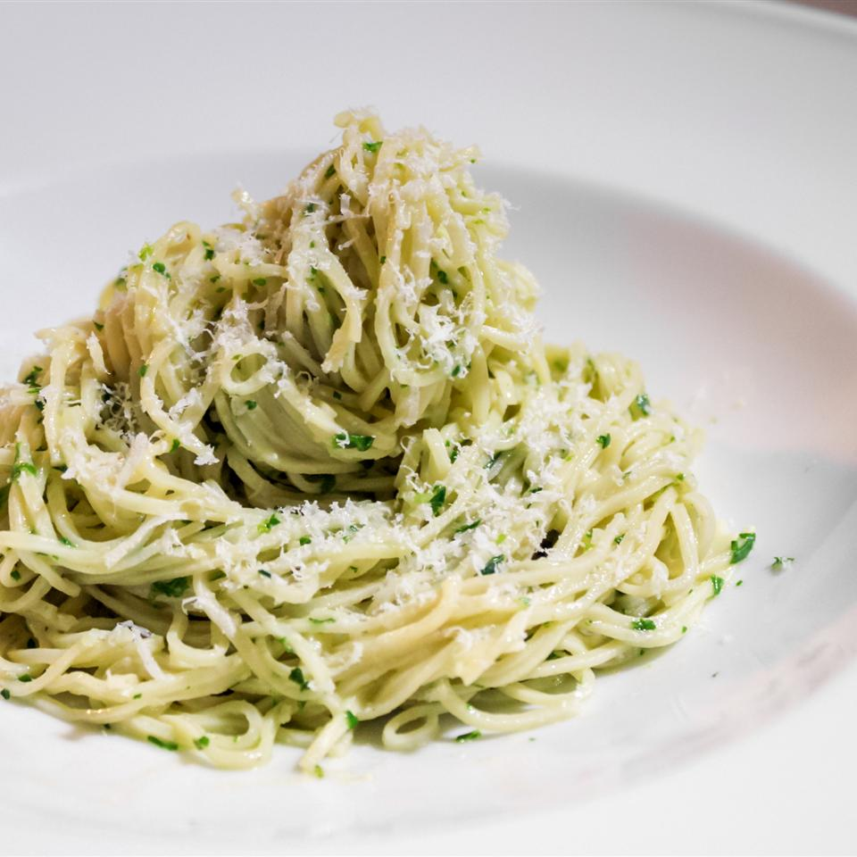
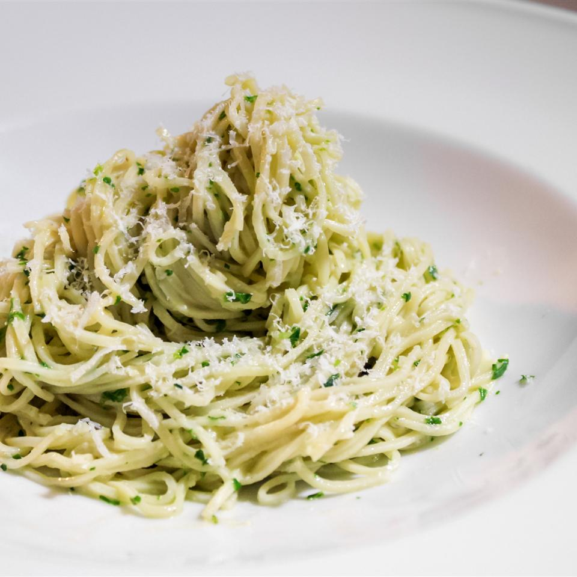

About the Chef
Hello! I'm an aspiring chef that has just recently started my own catering business. Welcome to my website!
Do you like healthy, good food, effective service, and fast delivery? Well you've come to the right place! We're currently working on expanding our menu, so be sure to look out for new dishes on the website!
My Life
Cooking has always been my passion, and I believe that food is a universal aspect of culture that brings people together. Food is more than just sustenance; It provides you with newfound memories, experiences, and knowledge that you can't get from anything else. Food is a big part of my life, and I hope that through this business, I get to share my love of food with others.
Growing up
I was introduced to cooking at a very young age. I started helping around in the kitchen, and eventually I started assisting my mom in making meals, which turned into learning how to cook from her. She taught me how to make some of her favorite dishes, like braised pork and stir fried rice. As I look back at my past, some of my fondest memories included me and my family simply cooking away in the kitchen.
After graduating high school, I decided to pursue my dreams and attended culinary school. From there, I started working as a line chef, but after 15 years of hard work and labor, I decided to change my life for the better, and start this business! It was a big change, and I was extremely nervous, but also estatic at the same time. I couldn't wait to see what the future held.
Now
Now, I've been succesfully running my catering busniess for over a year now, and its been an amazing journey! The pictures below showcase two of my all time favorite food dishes to have. They're not on the menu yet, but they will be soon!

 
